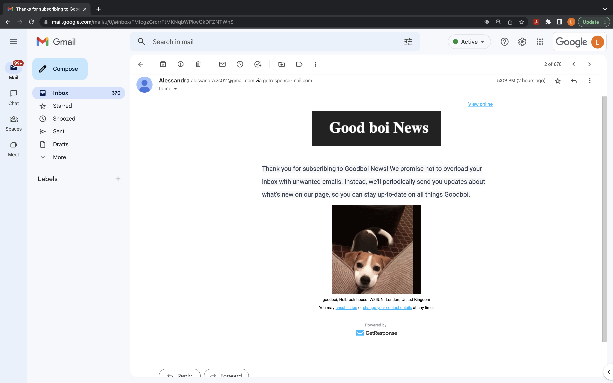

The GoodBoi website aims to provide good news that will brighten your day. The site is designed to be user-friendly, accessible, and easy to navigate.
I think the design and layout of the GoodBoi website are particularly successful. The site's clean design, along with its easy-to-navigate layout, make it simple for users to access information. The site's content is also well-organized and entertaining, providing interesting information for animal-lovers.
One aspect of the GoodBoi website that could be improved is the site's loading speed. I need to optimize the site's images and content to improve performance and provide a better user experience.
Another area for improvement is the site's interactivity, with the inclusion of features such as a comment section or user-generated content to increase engagement.
Also, the way data is being pulled could be optimized. I read about web scrapping, API services from other websites that allow me to extract the latest news and post formatting.
Finally, the use of frameworks and a server side for a completed website would be ideal to make it fully functionable.
Here is the email you get after subscribing:
